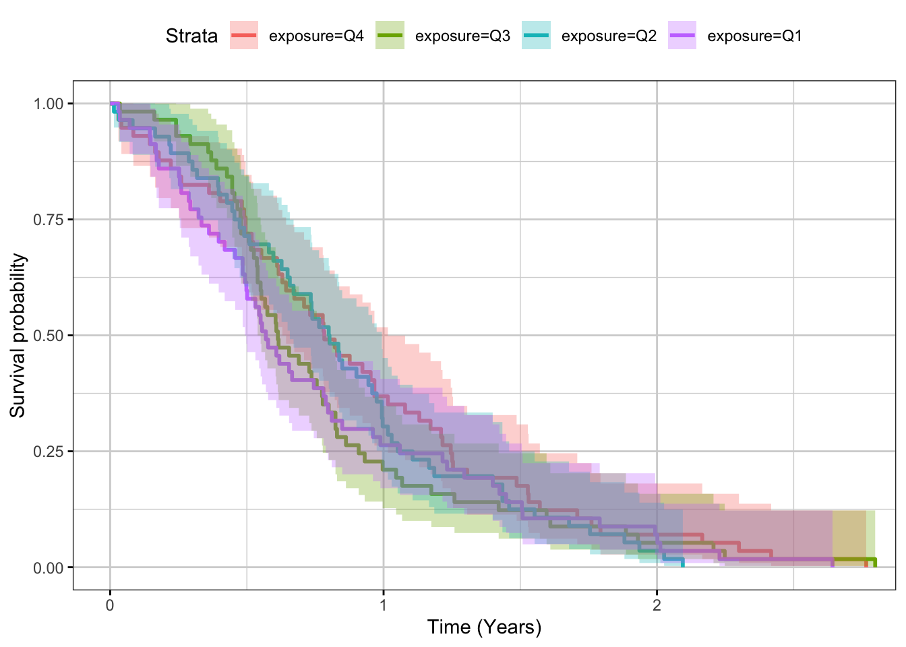
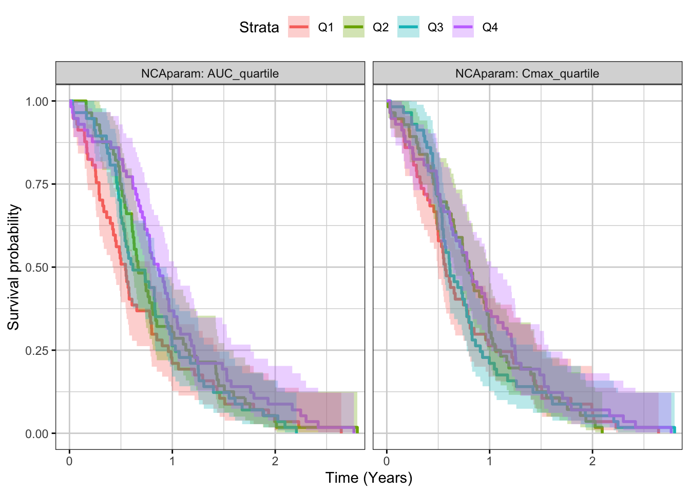

Rmarkdown template to generate this page can be found on Rmarkdown-Template.
Time-to-event plots can be summarized by Kaplan-Meier plots and stratified by exposure quartile to give an overview of the dose-response
#Use the lung dataset to create a fake exposure dataset
km_data <- lung %>%
mutate(fake_Cmax = ph.ecog + age/50) %>%
filter(!is.na(fake_Cmax)) %>%
mutate(Cmax_quartile= cut(fake_Cmax,
breaks=quantile(fake_Cmax,c(0,.25,.5,.75,1)),
include.lowest=TRUE,
labels=paste0("Q",c(4,3,2,1))))
#these columns are required for your dataset
km_data <- km_data %>%
mutate(exposure = Cmax_quartile, #exposure quantile,
time = time, #time of the event (or censoring)
event = status) #status: there are a three options for this column (see ?Surv)
# a) 0 = censored (alive), 1 = dead (event)
# b) 1 = censored (alive), 2 = dead (event)
# c) 0 = right censored, 1 = event at time,
# 2 = left censored, 3 = interval censored.km_fit <- survfit(Surv(time) ~ exposure, data = km_data, conf.int = 0.95)
gg <- ggsurvplot(km_fit, km_data, conf.int = TRUE, ggtheme = xgx_theme())
gg <- gg + xgx_scale_x_time_units(units_dataset = "day", units_plot = "year")
print(gg)
In this example, the exposures are also calculated using the measurements in two units (as depicted in OBSID). Another parameter for facetting used here is whether the quartile characterization was performed on AUC or Cmax
AssignGroup = function(Parameter)
{
group = case_when(Parameter < quantile(Parameter,0.25,na.rm = TRUE) ~ "Q1",
Parameter >= quantile(Parameter,0.25,na.rm = TRUE) & Parameter < quantile(Parameter,0.5,na.rm = TRUE) ~ "Q2",
Parameter >= quantile(Parameter,0.5,na.rm = TRUE) & Parameter < quantile(Parameter,0.75,na.rm = TRUE) ~ "Q3",
Parameter >= quantile(Parameter,0.75,na.rm = TRUE) ~"Q4")
}
km_data_facet_raw <- lung %>%
mutate(fake_Cmax = ph.ecog + age/50,
fake_AUC = ph.ecog*ph.karno + (age/50)^sex) %>%
filter(!is.na(fake_Cmax) | !is.na(fake_AUC)) %>%
mutate(timeCENS = sample(c(0,1), replace=TRUE, size=dim(km_data)[1]), # randomly assigning CENS for time to event as 0 or 1. In real data, this will be defined
Cmax_quartile= AssignGroup(fake_Cmax),
AUC_quartile = AssignGroup(fake_AUC)) %>%
mutate(OBSID = "Raw Data")
km_data_facet_relative <- lung %>%
mutate(fake_Cmax = 100*ph.ecog + age/50,
fake_AUC = 100*ph.ecog*ph.karno + (age/50)^sex) %>%
filter(!is.na(fake_Cmax) | !is.na(fake_AUC)) %>%
mutate (timeCENS = sample(c(0,1), replace=TRUE, size=dim(km_data)[1]), # randomly assigning CENS for time to event as 0 or 1. In real data, this will be defined
Cmax_quartile= AssignGroup(fake_Cmax),
AUC_quartile = AssignGroup(fake_AUC)) %>%
mutate(OBSID = "Relative Data")
km_data_facet = rbind(km_data_facet_raw,km_data_facet_relative) %>% # binding the two types of data - raw, relative units
select(-fake_AUC,-fake_Cmax) %>%
tidyr::gather(PKname, PKvalue, Cmax_quartile:AUC_quartile)
km_fit_facet <- survfit(Surv(time, event = (timeCENS ==0)) ~ PKvalue, data = km_data_facet, conf.int = 0.95)
gg_facet <- ggsurvplot(km_fit_facet, km_data_facet, facet.by = c("PKname","OBSID"), conf.int = TRUE, ggtheme = xgx_theme())
gg_facet <- gg_facet + xgx_scale_x_time_units(units_dataset = "day", units_plot = "year")
print(gg_facet)
In this data only 2 variables are available, so variable selection isn’t needed. If there are multiple variables, applying a variable selection approach (e.g. stepwiseAIC) would be advisable. The hazard ratio here corresponds to a 20% increase in the PK metric (Cmax, AUC)
km_Cox_raw = coxph(Surv(time, event = (timeCENS == 0)) ~
fake_AUC + fake_Cmax,
data =km_data_facet_raw)
km_Cox_rawSummary = broom::tidy(km_Cox_raw) %>%
mutate(OBSID = "Raw data")
km_Cox_relative = coxph(Surv(time, event = (timeCENS == 0)) ~
fake_AUC + fake_Cmax,
data =km_data_facet_relative)
km_Cox_relativeSummary = broom::tidy(km_Cox_relative) %>%
mutate(OBSID = "Relative data")
allCoxSummaries = rbind(km_Cox_rawSummary,km_Cox_relativeSummary) %>%
mutate(HR = (1.2)^estimate,
HR.low = 1.2^conf.low,
HR.high = 1.2^conf.high)
kable(allCoxSummaries) | term | estimate | std.error | statistic | p.value | conf.low | conf.high | OBSID | HR | HR.low | HR.high |
|---|---|---|---|---|---|---|---|---|---|---|
| fake_AUC | 0.0028509 | 0.0053653 | 0.5313558 | 0.5951722 | -0.0076649 | 0.0133666 | Raw data | 1.000520 | 0.9986035 | 1.002440 |
| fake_Cmax | 0.1522416 | 0.3400292 | 0.4477309 | 0.6543474 | -0.5142035 | 0.8186866 | Raw data | 1.028146 | 0.9105100 | 1.160980 |
| fake_AUC | 0.0000223 | 0.0000741 | 0.3017386 | 0.7628513 | -0.0001228 | 0.0001675 | Relative data | 1.000004 | 0.9999776 | 1.000031 |
| fake_Cmax | 0.0022644 | 0.0050761 | 0.4460920 | 0.6555308 | -0.0076846 | 0.0122134 | Relative data | 1.000413 | 0.9985999 | 1.002229 |
sessionInfo()## R version 3.4.3 (2017-11-30)
## Platform: x86_64-pc-linux-gnu (64-bit)
## Running under: Red Hat Enterprise Linux Server 7.4 (Maipo)
##
## Matrix products: default
## BLAS/LAPACK: /CHBS/apps/intel/17.4.196/compilers_and_libraries_2017.4.196/linux/mkl/lib/intel64_lin/libmkl_gf_lp64.so
##
## locale:
## [1] LC_CTYPE=en_US.UTF-8 LC_NUMERIC=C
## [3] LC_TIME=en_US.UTF-8 LC_COLLATE=en_US.UTF-8
## [5] LC_MONETARY=en_US.UTF-8 LC_MESSAGES=en_US.UTF-8
## [7] LC_PAPER=en_US.UTF-8 LC_NAME=C
## [9] LC_ADDRESS=C LC_TELEPHONE=C
## [11] LC_MEASUREMENT=en_US.UTF-8 LC_IDENTIFICATION=C
##
## attached base packages:
## [1] stats graphics grDevices utils datasets methods base
##
## other attached packages:
## [1] bindrcpp_0.2 xgxr_1.0.2 survminer_0.4.1 ggpubr_0.1.6
## [5] magrittr_1.5 survival_2.41-3 knitr_1.18 broom_0.4.3
## [9] dplyr_0.7.4 ggplot2_2.2.1
##
## loaded via a namespace (and not attached):
## [1] zoo_1.8-0 tidyselect_0.2.3 reshape2_1.4.3
## [4] purrr_0.2.4 pander_0.6.1 splines_3.4.3
## [7] lattice_0.20-35 colorspace_1.3-2 htmltools_0.3.6
## [10] yaml_2.1.16 survMisc_0.5.4 rlang_0.1.6
## [13] pillar_1.0.1 foreign_0.8-69 glue_1.2.0
## [16] binom_1.1-1 bindr_0.1 plyr_1.8.4
## [19] stringr_1.2.0 munsell_0.4.3 gtable_0.2.0
## [22] psych_1.7.8 evaluate_0.10.1 labeling_0.3
## [25] parallel_3.4.3 highr_0.6 Rcpp_0.12.14
## [28] xtable_1.8-2 scales_0.5.0 backports_1.1.2
## [31] cmprsk_2.2-7 km.ci_0.5-2 gridExtra_2.3
## [34] mnormt_1.5-5 png_0.1-7 digest_0.6.13
## [37] stringi_1.1.3 KMsurv_0.1-5 grid_3.4.3
## [40] rprojroot_1.3-1 tools_3.4.3 lazyeval_0.2.1
## [43] tibble_1.4.1 tidyr_0.7.2 pkgconfig_2.0.1
## [46] Matrix_1.2-12 data.table_1.10.4-3 assertthat_0.2.0
## [49] rmarkdown_1.8 R6_2.2.2 nlme_3.1-131
## [52] compiler_3.4.3